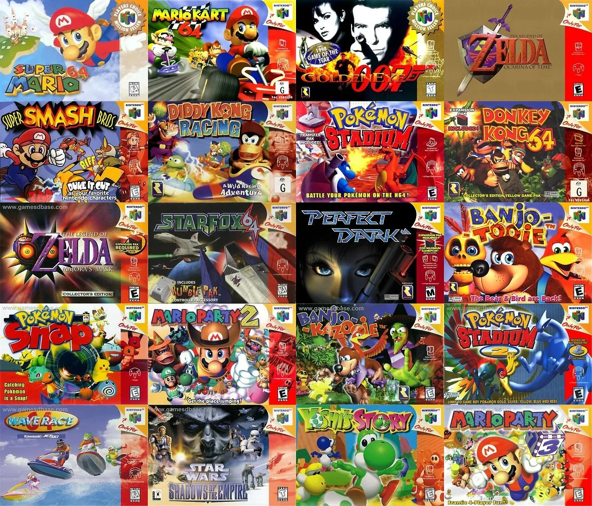

🕹️ 1970-1980: Los Orígenes
Los primeros videojuegos nacieron en laboratorios universitarios. Pong (1972) marcó el inicio de la era comercial. Las consolas Atari llevaron los juegos al hogar y definieron una nueva forma de entretenimiento.

Los primeros videojuegos nacieron en laboratorios universitarios. Pong (1972) marcó el inicio de la era comercial. Las consolas Atari llevaron los juegos al hogar y definieron una nueva forma de entretenimiento.
Con la llegada de consolas como la PlayStation y la Nintendo 64, los videojuegos entraron en la tercera dimensión. Aparecieron clásicos como Super Mario 64, Final Fantasy VII y The Legend of Zelda: Ocarina of Time, marcando un salto tecnológico.
El internet transformó los videojuegos en experiencias sociales. Xbox Live, Steam y juegos como World of Warcraft conectaron a millones de jugadores, creando comunidades y competencias globales.

Los gráficos alcanzan niveles cinematográficos y la realidad virtual nos transporta a otros mundos. Títulos como The Last of Us II, Red Dead Redemption 2 y plataformas como Oculus VR marcan el futuro de la industria.